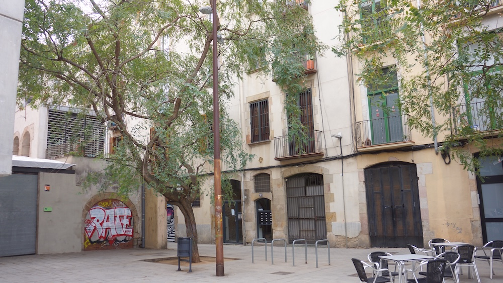
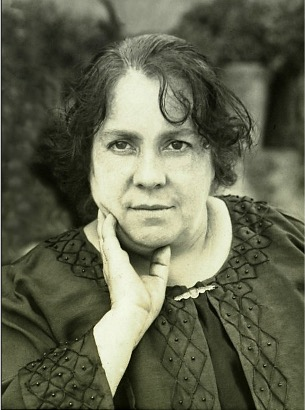

Jaume Giralt, 3 1º (1874–1885)
Història familiar
El més semblant a una estabilitat la van aconseguir en aquest carrer estret, on van viure onze anys.
En aquests anys la família va viure una etapa de creixement i alhora de dol. Mercè Godes Caballeria va néixer el 27 d’agost de 1874, però aquest fet es va veure enfosquit per la mort de la seva germana Ramona de tisi pulmonar tan sols quatre dies després.
Més endavant, el 9 de març de 1877, va néixer Josep, també en aquesta mateixa adreça.
Mercè Godes Caballeria

Mercè Godes Caballeria va néixer a Barcelona el 27 d’agost de 1874, dins d’una família marcada pels vincles profunds, pels canvis de casa i per una vida compartida molt intensament.
Va ser la petita dels germans Godes Caballeria i, amb els anys, es va convertir en una figura molt estimada i essencial dins l’univers familiar.
Soltera, va fer de la seva família la seva gran dedicació. Discreta, constant i generosa, va ser una d’aquelles persones que sostenen la vida dels altres sense ocupar mai el centre.
El seu nom queda unit de manera molt especial al d’Emília Hurtado Giró, la seva cunyada, amb qui va formar un tàndem inseparable. Juntes van ser, en molts sentits, el gran suport dels Godes Hurtado, acompanyant, cuidant i ajudant a tirar endavant la família en els moments importants de la seva història.
Més que una tia, Mercè va ser una presència protectora i imprescindible. Va morir a Barcelona el 13 de març de 1962, deixant el record d’una gran dona, d’aquelles que fan família de veritat.
Context Espanya
Amb la Restauració Monàrquica de 1874, la monarquia borbònica es consolida i arriba un gir conservador que posa fi a la inestabilitat republicana.
La derrota definitiva dels carlins aporta més tranquil·litat a Catalunya, que havia estat un dels principals focus del conflicte, i afavoreix una major estabilitat econòmica.
Context Barcelona
Barcelona es consolida com el motor industrial d’Espanya. La burgesia catalana dona suport a la Restauració buscant ordre, protecció aranzelària per als seus productes i estabilitat social.
El 1882 comencen les obres de la Sagrada Família d’Antoni Gaudí, simbolitzant l’auge de la cultura i l’arquitectura catalanes.
El període es tanca amb la mort d’Alfons XII el 1885 i una epidèmia de còlera que afecta greument la ciutat, posant de manifest la necessitat de millores higièniques i urbanístiques.
Consulta de l'Arxiver
Quin moviment artístic i arquitectònic va començar a Barcelona cap al 1885?